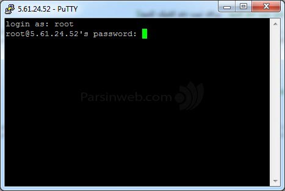

اتصال به سرور¶
محتوا
اتصال از طریق پروتکل SSH:¶
دسترسی به ماشینهای محاسباتی از راه دور به یک ضرورت تبدیل شدهاست و به سختی میتوان تصور کرد که نتوانیم این ماشینها را از مکانهای دور کنترل کنیم. بسته به سیستمعامل در حال اجرا، راههای زیادی برای برقراری ارتباط با یک دستگاه از راه دور وجود دارد، اما یک پروتکل پرکاربرد برای سیستمعاملهای بر پایه لینوکس، Secure Shell (SSH) است.
این پروتکل از برنامههای مشتری و سرور برای ایجاد ارتباط از راه دور استفاده میکند. این ابزار به شما امکان می دهد با استفاده از یک رایانه شخصی به سایر رایانهها از راه دور دسترسی پیدا کرده و آنها را مدیریت کرده، فایلها را انتقال داده و هر کاری را که در حالت حضور فیزیکی در مقابل رایانه انجام میدادید را از راه دور انجام دهید.
پیش نیازها:¶
قبل از اتصال از طریق پروتکل SSH با یک ماشین از راه دور ، چند مورد اساسی باید رعایت شود:
کامپیوتر از راه دور (سرور) باید همیشه روشن باشد و اتصال شبکهای داشته باشد.
برنامه های مشتری و سرور باید بروی رایانه شما و سرور نصب و فعال شوند.
به آدرس IP یا نام دستگاه از راه دور که میخواهید به آن وصل شوید نیاز دارید.
برای دسترسی به رایانه از راه دور باید مجوزهای لازم را داشته باشید.
تنظیمات فایروال برای اتصال از راه دور در رایانه شخصی و سرور انجام شده باشد.
توجه
چنانچه از اینترنت داخلی دانشگاه تهران به هنگام اتصال استفاده نمیکنید به دلیل وجود فایروال شما اجازه دسترسی نداشته و باید از سرویس UTVPN استفاده کنید. برای دریافت اطلاعات بیشتر در این زمینه بروی این لینک کلیک کنید
توجه
چنانچه از دانشجویان و یا اساتید دانشگاه تهران نیستید باید به صورت جداگانه درخواست دسترسی به UTVPN را ارسال کنید. برای این منظور، باید فرم PDF را پرکرده و برای مدیریت کلاستر به صورت امیل با عنوان UTVPN ارسال کنید.
برای اتصال به سرور میتوانید از سیستمعامل لینوکس و یا ویندوز استفاده کنید که به تفظیل در زیر اشاره شدهاست.
اتصال از طریق سیستمعامل لینوکس:¶
برای ایجاد اتصال SSH به یک مشتری (SSH Client) نصب شده نیاز دارید. ابزار SSH با منبع باز - که به طور گسترده برای توزیع های لینوکس استفاده می شود - OpenSSH است. نصب و استفاده از OpenSSH بسیار آسان است. تنها نیاز به دسترسی به یک ترمینال بروی رایانهای که برای اتصال از آن استفاده میکنید ، دارید. بسیاری از توزیع های لینوکس به صورت پیشفرض نسخه مشتری SSH را دارند. برای بررسی اینکه SSH در سیستم مبتنی بر لینوکس شما موجود است یا نه، باید:
یک ترمینال باز کنید. می توانید "terminal" را جستجو کنید یا
CTRL+ALT+Tرا روی صفحه کلید خود فشار دهید.در ترمینال
sshرا تایپ کرده وEnterرا در فشار دهید.اگر
SSH Clientنصب باشد، پاسخی به صورت زیر دریافت خواهید کرد:
این بدان معناست که بر روی رایانه شما نصب است. در غیر این صورت، شما باید آن را نصب کنید. دستور زیر را برای نصب بر روی رایانه خود اجرا کنید:
sudo apt-get update
sudo apt-get install openssh-client
اکنون میتوانید از SSH برای اتصال به هر ماشین یا سرور، به شرط داشتن امتیازات لازم برای دسترسی، و همچنین نام میزبان یا آدرس IP استفاده کنید. برای اتصال یک ترمینال باز کرده و دستور زیر را وارد کنید. توجه داشته باشید که host_ip_address برای هر ماشین مجزا است و برای سرور محاسباتی ما 172.16.187.30 است.
ssh your_username@host_ip_address
گذرواژه خود را وارد کرده و Enter را بزنید. توجه داشته باشید که هنگام تایپ کردن گذرواژه هیچ بازخوردی روی صفحه دریافت نمیکنید. هنگامی که برای اولین بار به سرور وصل میشوید ، از شما سؤال میکند که آیا میخواهید اتصال خود را ادامه دهید. فقط yes را تایپ کنید و Enter را بزنید. این پیام فقط اولینبار ظاهر میشود زیرا سرور از راه دور در دستگاه محلی شما مشخص نشدهاست. در نهایت در صورت اتصال موفق پیامی به شکل زیر به کاربر نشان داده خواهد شد که بیانگر اطلاعات کاربر و میزان مصرف آن است.

اکنون میتوانید از سروری که از راه دور وصل شدهاید، استفاده کنید. اگر در اتصال به سرور از راه دور مشکلی دارید، اطمینان حاصل کنید که:
آدرس IP سرور صحیح است.
نامکاربری و گذرواژه شما صحیح است.
به شبکه داخلی دانشگاه وصل هستید.
نرم افزار SSH به درستی نصب شدهاست.
اتصال از طریق سیستمعامل ویندوز:¶
برای اتصال به سرور احتیاج به نصب نرمافزارهای مناسب مانند putty و یا SSH Secure Shell دارید. در ادامه چگونگی اتصال با استفاده از این نرمافزارها توضیح داده میشود.
توجه
نرمافزارهای بسیاری برای اتصال از طریق SSH برای ویندوز وجود دارند ولی ما به دلیل رایگان بودن این دو را بیان کردیم. لیست بیشتری از نرمافزارهای مناسب برای این کار را در این لینک میتوانید پیدا کنید.
Putty
ابتدا برای اتصال به SSH از طریق ویندوز نرم افزار رایگان Putty را دانلود کنید. نرم افزار را باز کنید. آدرس IP را در کادر (Host Name (or IP Address و پرت اتصال به SSH (بطور پیشفرض پرت 22 می باشد) را در کادر Port وارد نموده و با کلیک بر روی open وارد قسمت ترمینال نرم افزار شوید. توجه داشته باشید که IP Address برای هر ماشین مجزا است و برای سرور محاسباتی ما 172.16.187.30 است.
در این مرحله باید نامکاربری را وارد کنید پس از وارد نمودن کلمهعبور دکمه Enter را فشار دهید. سپس از شما گذرواژه سوال می شود که با تایپ گذرواژه و زدن دکمه Enter به سرور متصل میشوید. توجه داشته باشید که هنگام تایپ کردن گذرواژه، هیچ بازخوردی روی صفحه دریافت نمیکنید.
در نهایت در صورت اتصال موفق پیامی به شکل زیر به کاربر نشان داده خواهد شد که بیانگر اطلاعات کاربر و میزان مصرف آن است.
اکنون میتوانید به سرور از راه دور وصل شده و از آن استفاده کنید. اگر در اتصال به سرور از راه دور مشکلی دارید ، اطمینان حاصل کنید که:
آدرس IP سرور صحیح است.
نام کاربری و رمز عبور شما صحیح است.
به شبکه داخلی دانشگاه وصل هستید.
نرم افزار SSH به درستی نصب شده است.
SSH Secure Shell
ابتدا این نرمافزار را از این لینک دانلود کرده و پس از نصب آن را اجرا کنید. آیکون Quick Connect را کلیک کرده، پنجرهای باز میشود. در قسمت Host Name، آدرس 172.16.187.30 و در قسمت User Name، نامکاربری را وارد کنید. قسمتهای دیگر از جمله Port Number (که مقدار آن 22 است) تغییری ندهید.
بعد از کلیک Connect، پنجرهای باز میشود، Yes را کلیک و گذرواژه را وارد کنید.
END!